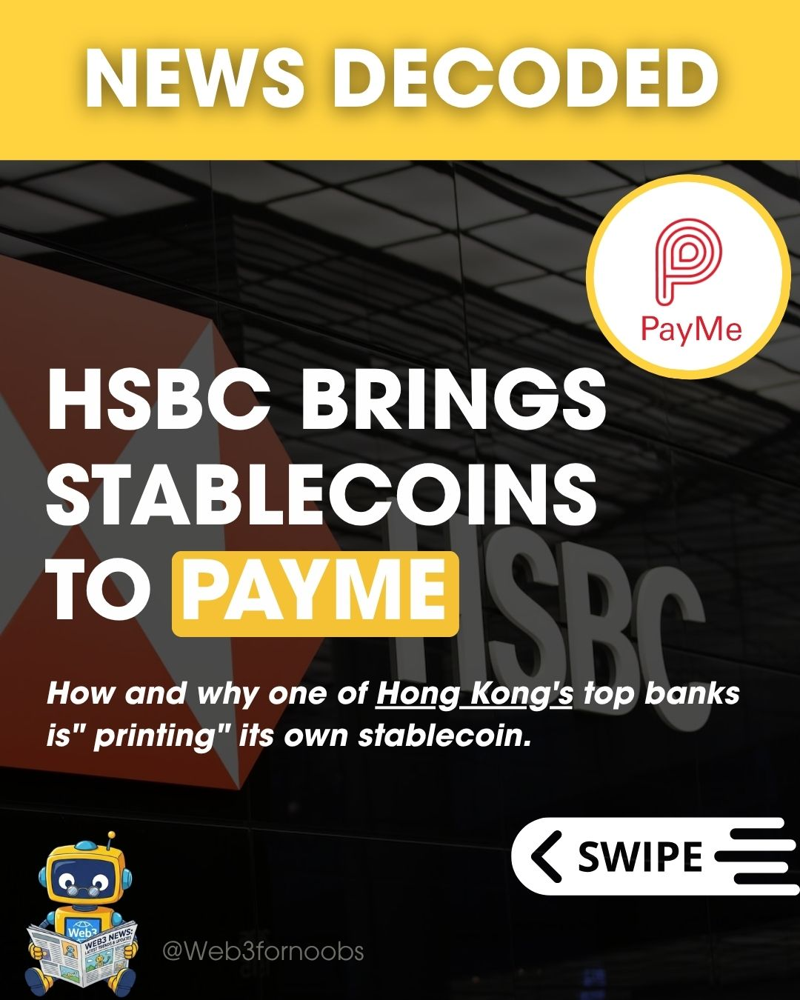
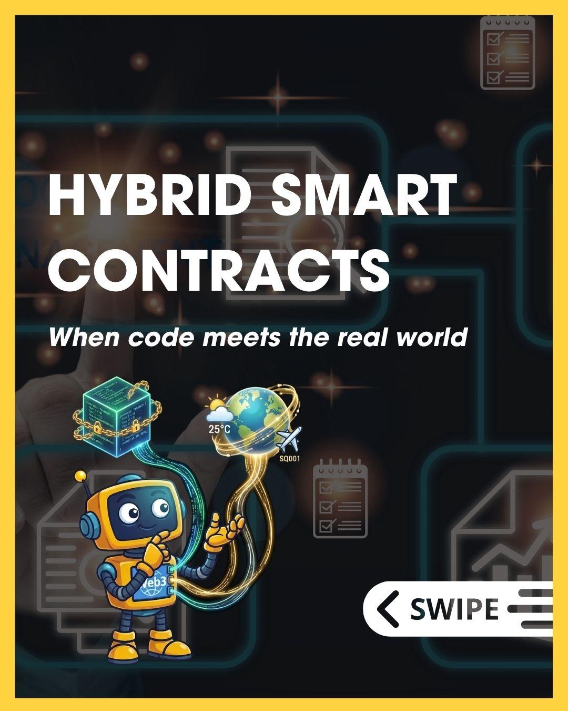

Audience needs
- Plain-language explanations.
- Concrete examples and walkthroughs.
- Recognisable visuals across topics.
- Clear next steps into resources and community.
An educational content and community project making unfamiliar Web3 concepts easier to explore through approachable explainers, partner-led sessions, recurring visual language and practical learning resources.
Make Web3 easier for beginners to understand and explore through accessible education, practical resources and community learning.
Web3 newcomers and curious learners, especially people starting from little or no prior knowledge.
End-to-end project lead — strategy, research, content, brand and digital presence, partnerships, community, events and execution.
Instagram, LinkedIn, Telegram, X Spaces, YouTube, project website, Luma and Eventbrite.
Measurement note: 1,300+ organic views across selected content, compared with 46 followers at the time. This is a views-to-follower ratio, not unique reach or conversion performance.
Web3 can feel abstract and jargon-heavy to newcomers. The project focused on translating unfamiliar concepts into accessible content and giving beginners practical ways to continue learning.
Use approachable explainers, practical tutorials, partner-led sessions and community touchpoints to help beginners move from curiosity to understanding.
A selection of published content formats. Open the original posts to see the source material and visual execution.

Stablecoins learning initiative with KIRAPAY, bringing partner expertise into beginner-focused Web3 education.
View original post ↗
Turned a Web3-related HSBC news development into a concise explainer, giving beginners context on why the story matters.
View original post ↗
Used a visual carousel to introduce hybrid smart contracts and make a technical concept easier to scan and understand.
View original post ↗
Applied a familiar enterprise example to connect Web3 concepts with a real-world business use case.
View original post ↗A beginner-friendly glossary that extends the educational content into a reusable reference.
Read the dictionary ↗I developed and hosted the Stablecoins 101 learning session with KIRAPAY, bringing partner expertise into beginner-focused Web3 education. The collaboration included sponsored quiz prizes, NFT attendance credentials and attendee merchandise.
I also managed the event journey — from registration and promotion to attendee communications and wallet onboarding.
Created the session presentation, coordinated the guest speaker and partner contributions, and designed participation elements including an attendance certificate NFT and quiz-winner badge.
View presentation deck ↗Set up the Luma event page and registration journey, coordinated attendee communications, and created a MetaMask tutorial to help participants receive their NFT credentials.
View event listing on Luma ↗Designed supporting NFT assets to recognise attendance and quiz participation.
 View certificate artwork ↗
View certificate artwork ↗A step-by-step video made to help event participants set up or access a wallet and understand how to receive their NFT credentials.
A recurring robot mascot was generated with Google Gemini and adapted for educational content. This gave the project a recognisable visual anchor while allowing the character and supporting visuals to change with each topic.
Contribution described: AI-assisted character generation, visual adaptation and application across educational content.

The recurring character gives beginner-focused content a recognisable visual anchor.
 Seedphrase
SeedphraseVisual adaptation for a key Web3 security concept.
 Stablecoins
StablecoinsTopic-specific character artwork for beginner education.
 Web3 News
Web3 NewsA topic-specific character variation for timely Web3 updates.
 Hot wallet
Hot walletA visual adaptation used to explain wallet concepts to beginners.
I led Web3 For Noobs across strategy and hands-on execution — shaping the project direction, building its educational content system, developing its visual identity and digital presence, and connecting content with partnerships, community and events.
Return to the portfolio to explore other projects and growth proposals.